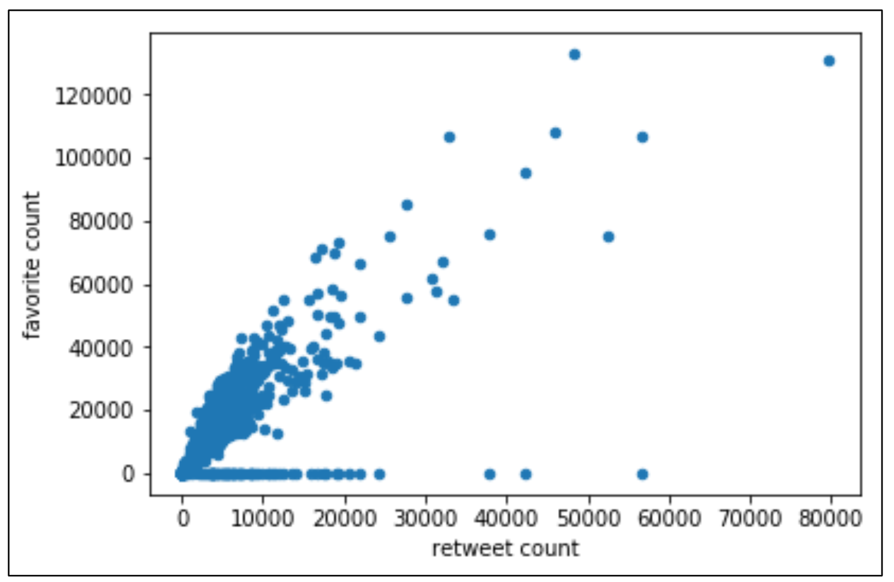

The objective is to go through the process of Data Wrangling (gathering data from different sources and formats, assessing and cleaning the data) extensively for Data Analysis and Visualization. The data sources consisted of an tweet archive with various information on a single tweet, a predicition file for predicting the dog's breed and a tweets list with additional information that was gathered via the Twitter API. After the wrangling the data was cleaned and stored in a single file so analysis could be handled. For a detailed view visit the Github repository.
Three different data sources were provided and loaded into a dataframe in a Jupyter Notebook. The twitter archive was provided as csv file and could be gathered easily into the Notebook. Second, a image prediction file needed to be gathered by downloading it via the given url and safing it into a dataframe. This information enriched the basic tweet information from the archive file. Additionally, the tweets list could be accesed via the Twitter API and safed as json format into a txt file. From there, a json file was loaded into the Notebook and safed as a dataframe to access the information.
The data was inspected visually and programmatically. Various quality and tidiness issues could be detected and the observations were defined for the cleaning process. Dirty Data is low quality data and needs to be removed from the data set. For example for this special purpose only original tweets were allowed for the analysis so retweets and replies needed to be deleted. Also for a smooth analyzing process the correct data type of the variables, e.g. datetime, and intuitive and correct column names needed to be ensured as well as the uniform spelling. Also for the purpose of this project, not necessary information like the url was dropped so the dataframe was good to handle. Some tidiness issues were adressed. Above all the dog class was put into one column as each variable needs to form only one column. Therefore some information was seperated into two columns, e.g. date of the tweet and time of the tweet. Dataframes were merged together as each type of observational unit should be listet in one table.
Tools:
Data about the dogs breed shows that golden retrievers are the ones that appear the most in the tweet images before labradors, pembrokesand and chihuahas. With having used a prediction algorithm this data needs to be used carefully but can give a first indication about which dog breed is most common to share pictures in twitter and therefore is widly spread and popular in social media. By analyzing the tweet data it can be clearly said, that there is a high correlation between retweet count and favorite count (r = 0.79) as shown in the following figure.

Finally a analysis of the tweet ratings grouped by the dog stage shows that there is a difference in the mean ratings. According to this the single stage puppo receives the highest mean ratings before doggo. This shows that there could be a difference in perception of dog tweets and ratings based on the dog stage, with the tendency that tweets with younger dogs, as puppo, receive a higher rating.